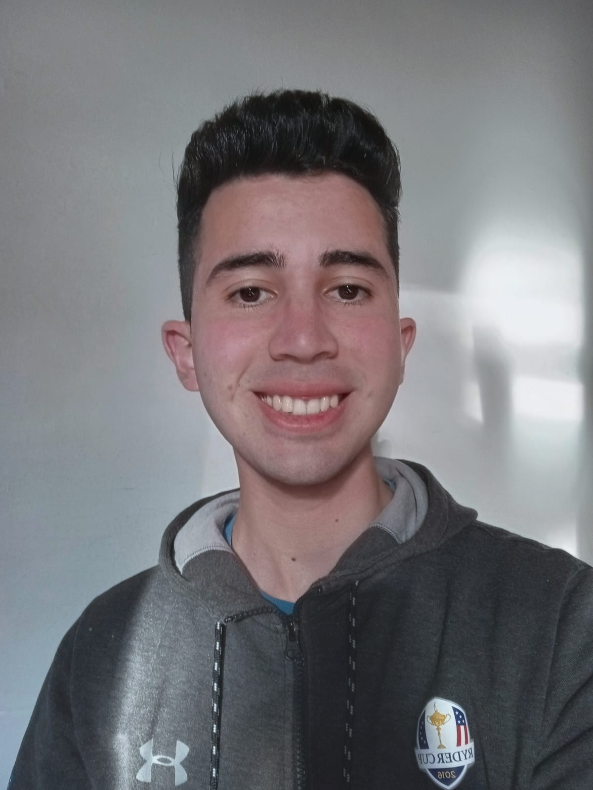

Lucio Leonel Vazquez | WDD 130
Hello, my name is Lucio Vazquez. I'm from Buenos Aires, Argentina. I'm 22 years old and I served as a missionary for The Church of Jesus Christ of Latter Day Saints in Cordoba, Argentina. My family is composed by five members, my parents, my younger brother, my elder brother and me. My whole family are members of the Church, my parents were baptized when they were younger before meeting each other. My father and my older brother served a Mission, my Father served in the same Mission as me, and my elder brother served in Bolivia, Santa Cruz. My younger brother is serving a mission at the moment, he's in the Resistencia Argentina Mission. I'm currently studying at BYU Idaho, I'm working to get a bachelor's degree on web development. Last year I finished my certificate in Patwhay Worldwide, wich was a big achivement for me. Now my goal is to keep studying in BYU Idaho online and finish my first certificate in web development.